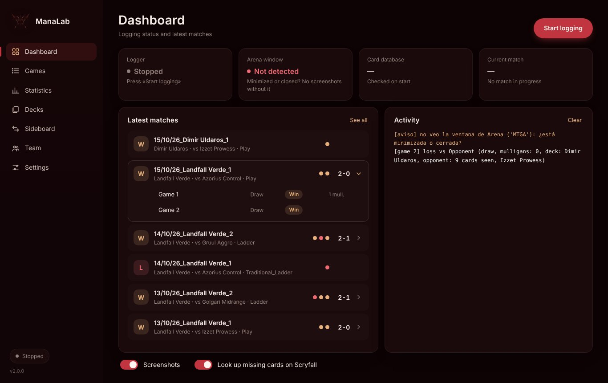

Every Arena match, logged on its own.
ManaLab is an MTG Arena tracker that reads Arena's log while you play and keeps your opening hands, mulligans, play or draw, sideboard changes and the opponent's deck. Then it shows you where you win and where you lose.

Know what went wrong in every lost game
The app is free. Only the AI analysis is paid.
Open any lost game and ask the AI what went wrong, where you could have played better and what to try next time. It reads the game's data, not your name or the opponent's.
Up to 30 analyses a day. You get your code by email as soon as you subscribe.
Cancel any time: if you don't renew on Ko-fi, the code expires by itself.
From Arena's log to your history
With «Detailed Logs» on, Arena writes every game to Player.log. ManaLab reads it as you play and turns it into matches you can review.
[UnityCrossThreadLogger] GreToClientEvent
{ "type": "GREMessageType_MulliganReq",
"systemSeatIds": [1] }
[UnityCrossThreadLogger] GreToClientEvent
{ "gameInfo": {
"matchState": "MatchState_GameComplete",
"gameNumber": 3,
"results": [{ "result": "ResultType_WinLoss",
"winningTeamId": 1 }] } }Everything you'd note down after each match, done for you
Matches and games
Each Bo3 is one row with its score (2-1, 1-2…) that opens to show every game: play or draw, result and mulligans.
Hands and screenshots
Your opening hand, the hand you kept and screenshots of the key moments. Press F8 or the button over Arena to save any moment you want and add a note to it.
Opponent's deck
It compares the opponent's cards with the most played Standard decks and names the closest one. The meta list updates every 3 days.
Statistics
Match and game win rates, streaks, last days, and breakdowns by mulligans, play/draw, deck and opponent archetype.
Your decks
Each list you play with its win rate. Sideboard variants are grouped under the same deck, and you can rename them.
AI loss review (subscribers)
Subscribers get an AI analysis of every lost game: what went wrong, where you could have played better and what to try next. Subscription: 5 € per month, on Ko-fi.
Overlay while you play
A separate window next to Arena with your deck's remaining cards, the opponent's cards seen so far and the turn. It only shows what the game already makes public.
Sideboard guide
Per matchup, what you brought in and took out in your own games and how it went, so you stop sideboarding from memory.
Coach and team
Error tags and notes on each game, matchup tables and a report for your coach. Team mode shares your games, screenshots and notes through a common folder, and your coach sees each game in full, replay included.
Built to review, not to fill in
Screenshots with sample data.
Four steps, once
Download and open
Windows 10 or 11. Unzip the file and open ManaLab.exe. Nothing to install.
Before unzipping, right-click the ZIP › Properties › tick Unblock › OK: that way Windows neither shows «Windows protected your PC» nor blocks the program's files. If the warning still appears, click More info › Run anyway. Only needed on this first download: later versions install from inside the app with no warning.
Turn on Arena's log
In Arena: Options › Account › Detailed Logs. Without it, Arena doesn't write the games.
Press «Start logging»
Open ManaLab before playing and leave it running. Each match appears on the Dashboard when it ends.
Play and review
Play Arena in windowed or borderless mode and review your games in Games. The app is free. If you want the AI analysis of your losses, subscribe on Ko-fi (5 € a month) and paste the code in Settings › AI.
Before you start
Does it touch the game or give me an advantage in a match?
No. It only reads the log file that Arena itself writes on your PC. It doesn't modify Arena, doesn't read its memory and doesn't connect to its servers. The optional overlay is a separate window that shows only information the game itself makes public (your cards played and the opponent's cards revealed), never hidden information.
What data does it send?
Your games, screenshots and statistics stay in a folder on your PC. The program only downloads the updated meta deck list (every 3 days), looks up a card's name on Scryfall if it's missing from Arena's database, and asks GitHub once a day whether there's a new version. You can turn all three off in Settings. The only time it sends data out is when you ask for the AI analysis: then it sends that game's data (result, deck, hands, cards seen and timeline), never your name or the opponent's.
Windows says «Windows protected your PC». Is it safe?
That warning appears for programs without a paid code-signing certificate, which is common for small free tools. Click «More info» and then «Run anyway». It only shows on the first download: from 2.1.3 on, new versions install with «Update now» from inside the app, with no warning. To avoid it the first time too, before unzipping right-click the ZIP › Properties › tick «Unblock» › OK. Every version is checked on VirusTotal before it's published.
Does it work on Mac or for Limited?
For now it's for Windows. It logs any Arena game, including Limited, although the opponent's deck detection uses the Standard meta.
Is it free?
The program is free, with no ads or accounts. The only paid part is the AI loss analysis: 5 € per month, which pays for the AI service it uses. Every other feature is free.
How do I get the AI analysis?
Subscribe on Ko-fi. After paying you receive a subscription code by email. Paste it in Settings › AI (subscription) and the analysis appears in each lost game's Analysis tab.
Free, with AI analysis by subscription
ManaLab is made in spare time. The program stays free. The subscription of 5 € per month pays for the AI service; donations help with everything else.
Write to us
Questions, bugs or subscription problems. We reply by email, usually within a few days.